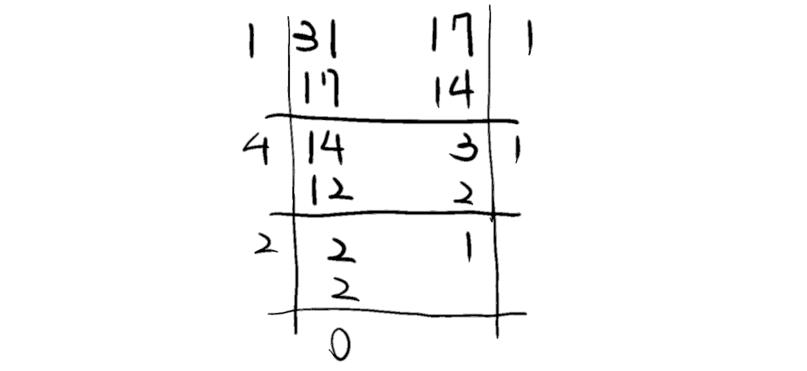

Congruence
同餘是數論中很重要的一環。同餘關係的使用，代表我們討論的數學不再僅限整數、實數等無限長的域，而討論一個會「循環」的域。這一點在計算機中尤其重要。現代計算機的本質是位元操作，其在實際上總是只能代表「有限」的數字，這體現在「溢位」這個現象，而同餘關係很適合用來為這樣的系統建模。〔個人心得〕 ## Compatibilities towards Basic Arithmetic 模運算適用許多基本運算，如加法、減法、同乘等等。
Proposition \[ a\equiv b \,( \text{mod }m ) , c\equiv d \,( \text{mod }m ) \implies \left\{\begin{aligned} (a+c) & \equiv (b + d) \,( \text{mod }m ) & (1) \\ a \cdot c & \equiv b \cdot d \,( \text{mod }m ) & (2) \end{aligned}\right. \]
Proof(1) 根據定義，\(m\)整除\(a-b\)跟\(c-d\)，因此我們可以設任意整數\(k_{1},k_{2}\)使得 \[ (a - b)= k_{1} m ;(c- d) = k_{2} m. \] 則我們可以將兩式合併，得\({(a - b) + (c - d) = (k_{1} + k_{2})m}\)，重新整理得\({(a + c) - (b + d) = (k_{1} + k_{2})m}\)，便符合同餘的定義。\(\blacksquare\)
Proof(2) 略，跟Proof(1)操作方式相似。\(\square\)
Other Trivial Cases
模\((c\cdot m)\)除以任意因數\(c\)，同餘式仍成立： \[ a \equiv b \,( \text{mod } c\cdot m ) \implies a \equiv b \,( \text{mod } m ) \]
Bezout’s Identity
任意兩個數的線性組合必可以組出他們的最大公因數： \[ (\forall a, b \ \exists x,y)\ a\cdot x + b \cdot y = \text{gcd}(a, b), \] 而這個計算可以透過extended Euclidean algorithm求得。
Extended Euclidean Algorithm
Example 找31, 17的線性組合。即解\({31x + 17y = \text{gcd}(31, 17)}\)。
首先用輾轉相除法，求得\({\text{gcd}(31, 17)}\)。其計算過程對於extended Euclidean是有幫助的。 \[ \begin{aligned} 31 & = 17 \cdot 1 + 14 \\ 17 & = 14 \cdot 1 + 3 \\ 14 & = 3 \cdot 4 + 2 \\ 3 & = 2 \cdot 1 + 1 \\ 2 & = 1 \cdot 2 + 0 \end{aligned} \] 若寫成直式就是：

得到算式與最大公因數後，接著執行extended Euclidean，有點像是「逆推」： \[ \begin{aligned} \text{gcd}(31, 17) & =1 \\ & =3 - 2\cdot 1 \\ & = 3 - (14 - 3 \cdot 4) \cdot 1 & & = -14 + 3 \cdot 5 \\ & = - 14 + (17 - 14 \cdot 1) \cdot 5 & & = 17\cdot 5 + 14 \cdot (-6) \\ & = 17\cdot 5 + (31 - 17 \cdot 1) \cdot (-6) & & = 31 \cdot (-6) + 17 \cdot 11 \end{aligned} \] \(\therefore\)我們得到\({x = -6, y = 11}\) \(\blacksquare\)
Use Cases
我們可以利用extended Euclidean來求某些「同餘方程式」，比如： \[ 17 x = 8 ( \text{mod }31 ) \] > 透過同餘的定義，我們知道\(31\)整除\(17x - 8\)，寫作\({31 | (17x - 8)}\)；再根據整除的定義，又可用一任意整數\(k\)，寫作\({17x - 8 = 31k}\)。 > 經過整理可得\({17x + 31(-k) = 8}\)，則此形式已經有點像是extended Euclidean可以處理的對象了。 > 然而，\({\text{gcd}(17, 31) \ne 8}\)，這個式子無法直接求解。此路不通。
根據前一小節舉例所得成果，已知\({31\cdot (-6) + 17\cdot 11 = 1}\)。重新寫成同餘式，則： \[ 17 \cdot 11 \equiv 1( \text{mod } 31 ) \] 根據同餘保持基本運算的特性，我們可以再度重寫同餘方程式（兩邊同乘）： \[ 17\cdot 8\cdot 11 \equiv 8( \text{mod }31 ) \] 故可以解得\({x \equiv 88}\)，取其最小正整數解\({x = 26}\)。\(\blacksquare\)
Modular Multiplicative Inverse
對於一數\(a\)，若且唯若\(a\)與\(m\)互質，其模反元素\(a^{-1}\)存在。定義如下： \[ \text{gcd}(a, m) = 1\Longleftrightarrow a^{-1}: a\cdot a^{-1} \equiv 1 \,( \text{mod }m ). \] 由上可知反元素與所討論的域\(\mathbb{Z}_{n}\)有關。
Proof by Bezout’s Identity
設\({d = \text{gcd}(a,m)}\)。根據Bezout’s identity，若\(d = 1\)，則存在\(x,y\)使得 \[ a\cdot x + m \cdot y = 1, \] 因為以\(m\)為模，可以重寫為 \[ a\cdot x \equiv 1 \,( \text{mod }m ) . \] 使用extended Euclidean algorithm便可求得\(x\)，而依據定義，\(x\)即為\(a\)的乘法反元素。 若\(d\ne 1\)，該數\(a\)不互質模\(m\)，則Bezout’s identity不成立，\(a^{-1}\)不存在。 ## Fermat’s Little Theorem Let \(p\) be a prime. Then \[ \forall a \in \mathbb{Z}, \text{gcd}(a, p) = 1 \implies a^{p - 1} \equiv 1 \ ( \text{mod } p ) . \] Example \({p= 3, a = 5}\) 依照費馬小定理，可得\({5^{3 - 1} = 25 \equiv 1\,( \text{mod } 3 )}\)。 ### Explanation with Abstract Algebra 乘法群\({\mathbb{Z}_{p}}^{*}\)的階為\(p-1\)，因此任意元素的\(p-1\)次方當然會回到單位元1。
A Corollary
\[ a^{p} \equiv a \,( \text{mod } p ) . \] 從費馬小定理的原方程式開始： 1. 如果\(a\)與\(p\)互質，則代表同餘式兩邊可以相乘\(a\) 2. 如果不互質，\(p|a\)，則\({a^{p} \equiv 0 \equiv a \,( \text{mod } p )}\)
RSA
Preprocessing
- Choose 2 big prime numbers \(p\) and \(q\).
- Choose a pair of numbers \(e\) and
\(d\) such that
- \(d\cdot e = 1(\text{mod}\ (p - 1)(q-1))\), when \(e\) is public and \(d\) is private.
- Announce \((pq, e)\); keep \((p, q, d)\). ## Encryption and Decryption Encrypting message \(m\) as code \(c\): \[ c \equiv m^{e} (\text{mod}\ pq),\ m< pq, c < pq. \] Decrypting \(c\) as \(m\): \[ m \equiv c^{d} (\text{mod}\ pq). \] ## Verification We set a symbol for the modulo: \[ r := (p-1)(q - 1); \] also, for the product of two big primes: \[ n:= p\cdot q, \] then we can describe the decrypting equations as \(m \equiv c^{d}(\text{mod}\ n)\).
For the convenience of the proof, we set an arbitary number \(k\) such that \[ e \cdot d \equiv 1 (\text{mod}\ r) \implies r | (e\cdot d - 1) \implies ed = 1 + kr. \] So that according to the proccess of encryption and decryption, we can say that \[ c^{d} \equiv (m^{e})^{d} \equiv m^{(e\cdot d)} \equiv m^{1 + kr} (\text{mod}\ n), \] and in order to prove that this process really lead us to transfer the correct message, we need to check if \[ c^{d} \equiv m^{ed} \equiv m^{1+kr} \equiv m (\text{mod}\ n). \] 將式子重新整理，得： \[ m\cdot m^{k(p-1)(q - 1)} \equiv m \,( \text{mod } pq ) \] 根據同餘保持基本運算的特性，兩邊同除\(m\)： \[ m^{k(p - 1)(q - 1)} \equiv 1 \,( \text{mod }pq ) \] \[ m^{k(p - 1)(q - 1)} \equiv 1\ \,( \text{mod } pq ) \] ### Verification Practice > 如果縮減模，得\({(m^{k(q - 1)})^{p - 1} \equiv 1 \,( \text{mod } p )}\)，則依照費馬小定理便可得解。 > 但是\({\text{gcd}(m,p) \underset{?}{=} 1}\)，條件沒有說。此路不通。
分項討論 - Case 1: \({\text{gcd}(m,p) = 1 \land \text{gcd}(m, q) = 1}\) - Case 2: \({\text{gcd}(m, p) \ne 1 \underline{\lor} \text{gcd}(m, q) \ne 1}\)
\({\text{gcd}(m,p) \ne 1 \land \text{gcd}(m, q) \ne 1}\)必然不成立： 如果成立，則\({pq | m}\)，存在正整數\(k'\)使得\({m = kpq}\)（因為\(m > 0\)）。 但RSA的前提已經表明\({m < pq}\)，故不成立。
Case 1 根據費馬定理， \[ m^{p - 1} \equiv 1 \,( \text{mod } p ) \land m^{q - 1} \equiv 1 \,( \text{mod } q ) \] 則依基本運算可輕易得\({m^{k(p-1)(q-1)} \equiv 1 \,( \text{mod } pq )}\)
Case 2 先以\(p\)討論： 已知\(m,p\)不互質，則依照Case 2的假設，\({\text{gcd}(m,q) = 1}\)（或者\(m=0\)，不討論）。
因為\(m\)為\(p\)的倍數，則\(m\)的任意乘冪皆為\(p\)的倍數，即 \[ m^{1 + k (p - 1)(q - 1)} \equiv m \,( \text{mod } p ), \] 則兩者同餘，\({m \equiv m^{k(p - 1)(q - 1)} \,( \text{mod } p )}\)。
又依據費馬定理， \[ m^{q - 1} \equiv 1 \,( \text{mod } q ) \] 則可推知 \[ {m^{k(p-1)(q-1)} \equiv 1 \,( \text{mod } q )}. \] 兩邊相乘\(m\)即得\({m^{1 + k(p - 1)(q - 1)} \equiv m\,( \text{mod } q )}\)。
統整得 \[ \left\{\begin{aligned} & m^{1 + k(p - 1)(q - 1)} \equiv m \,( \text{mod } p ) \\ & m^{1 + k(p - 1)(q-1)} \equiv m \,( \text{mod } q ) \end{aligned}\right. \implies m^{1 + k(p - 1)(q - 1)} \equiv m \,( \text{mod } pq ) . \] 故得證 \(\blacksquare\)
Chinese Remainder Theorem
今有比1大且兩兩互質的正整數\({m_{1},m_{2},m_{3},\dots m_{n}}\)與任意整數\({a_{1},a_{2},a_{3},\dots,a_{n}}\)。則聯立同餘方程組 \[ \forall i \in \mathbb{N}_{n}\ x \equiv a_{i} \,( \text{mod } m_{i} ) \] 模\({m_{1}\cdot m_{2}\cdot (\dots) \cdot m_{n}}\)時有唯一解 \[ x = \sum ^{n}_{i = 1} a_{i} \cdot y_{i} \cdot M_{i}, \] 其中\(y_{i}\)為\({M_{i} = \frac{m}{m_{i}}}\)的模反元素\({(M_{i})^{-1}}\)。 白話翻譯： 該總和式，在模所有同餘模相乘時有唯一解；而y_i則是在該行的模m_i，取M_i的逆元。
Proposition: Modulo Factorization
對於兩個互質的模\(m_{1}, m_{2}\)： 1. 同餘方程\(\left\{\begin{aligned}x\equiv a_{1} \,( \text{mod }m_{1} )\\ x\equiv a_{2} \,( \text{mod } m_{2} )\end{aligned}\right.\)有解 2. 任兩解都會同餘模\(m_{1} \cdot m_{2}\)。 > 或者說，對於整數環\(\mathbb{Z}_{m_{1}\cdot m_{2}}\)會有唯一解。
Proof
\[ \text{If}\ t \equiv m_{1}^{-1}(a_{2} - a_{1}) \,( \text{mod }m_{2} ) ,\ \ \text{then} \ \ x = a_{1} + m_{1} t\ \text{is such a solution.}\ \blacksquare \]
Uniqueness Proof
假設有兩數\(x_{1},x_{2}\)均為同餘方程式之解。則對於所有方程式都存在商數\(r_{i}, r'_{i}\)使得 \[ x_{1} = r_{i}\cdot m_{i} + a_{i} \ \ \ \text{and}\ \ \ x_{2} = r'_{i} \cdot m_{i} + a_{i} \] 兩數相減得\({x_{1} - x_{2} = (r_{i} - r'_{i})\cdot m_{i}}\)，則\({m_{i} | (x_{1} - x_{2})}\)，即 \[ x_{1} \equiv x_{2} \,( \text{mod } m_{1} \cdot m_{2} \cdot (\dots)\cdot m_{n} ), \] 故知兩數模\({m_{1}\cdot m_{2}\cdot (\dots)\cdot m_{n}}\)時有唯一解 \(\blacksquare\)
Proof of C.R.T.
設\({m = m_{1} \cdot m_{2} \cdot (\dots) \cdot m_{n}}\)，並設\(M_{i} = \frac{m}{m_{i}}\)。 > \(M_{i}\)的語意為「除了\({m_{i}}\)以外的所有模」
因為\(m_{i}\)兩兩互質，對於任意\(k \ne i\)，\({\text{gcd}(m_{k}, m_{i}) = 1}\)，據此得 \[ \text{gcd}(M_{i}, m_{i}) = 1. \] > \(M_{i}\)與\(m_{i}\)互質
則依模反元素的定義，存在\(y_{i}\)使得 \[ M_{i} \cdot y_{i} \equiv 1 \,( \text{mod } m_{i} ) , \] 或寫作\({y_{i} = {M_{i}}^{-1}}\)。 假設\({x = \sum ^{n}_{i = 1}a_{i}\cdot y_{i} \cdot M_{i}}\)為解。 根據定義可知，對於任意\({j \ne i}\)，\(M_{j}\)均可被\({m_{i}}\)整除，即 \[ M_{j} \equiv 0 \,( \text{mod }m_{i} ). \] 故對於所有\(i\)， \[ x \equiv a_{i} \cdot y_{i} \cdot M_{i} \equiv a_{i} \,( \text{mod } m_{i} ) \] 均成立，符合方程組之敘述，故假說成立 \(\blacksquare\) > \(M_{j}=0\)的說明旨在提示\(x\)的其他所有加法項都會「消去」，只剩下第\(i\)項。